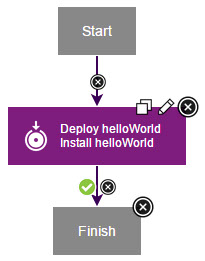

Application processes direct underlying component processes
and orchestrate multi-component deployments.
About this task
An application process, like a component process, consists of steps that are configured
with the process editor. In this lesson, you create an application process that installs the
helloWorld component by calling the component process that you created earlier. You must use
application processes to deploy components.
Procedure
-
Click the Applications tab, and then click hello
Application.
-
Click Processes, and then click Create
Process.
- In the Create an Application Process window,
name the new application process something like hello App
Process.
-
Accept the default values for the other fields, and click Save.
- To open the new process in the process editor, click the
new process.
- Add a step that deploys the helloWorld component:
-
From the list of steps, add an Install Component step to the design
area, and then on the process step click the Edit icon.
- In the Edit Properties window,
name the step something like Deploy helloWorld.
- In the Component list, select
the helloWorld component.
All components
that are associated with an application are available.
- In the Component Process list,
select the helloProcess component process.
If multiple processes were defined for the helloWorld component,
they are listed.
- In the Limit to Tag list, select
the blueCycle tag that you defined earlier.
After you select blueCycle, the application
deploys only components with this tag.
-
Accept the default values for the other fields, and click OK.
-
Verify that the Start step is connected to the Deploy
helloWorld step.
-
Verify that the Deploy helloWorld step is connected to the
Finish step.
-
Save the process by clicking Save.
Results
The complete application process looks like the following figure:

Example
In this lesson, you created an application process that
deploys the helloWorld component.
The Processes tab lists the application
process.
What to do next
For more information about creating application processes,
see Application processes.